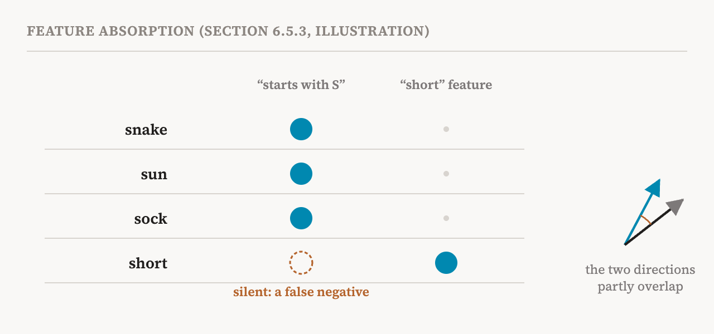
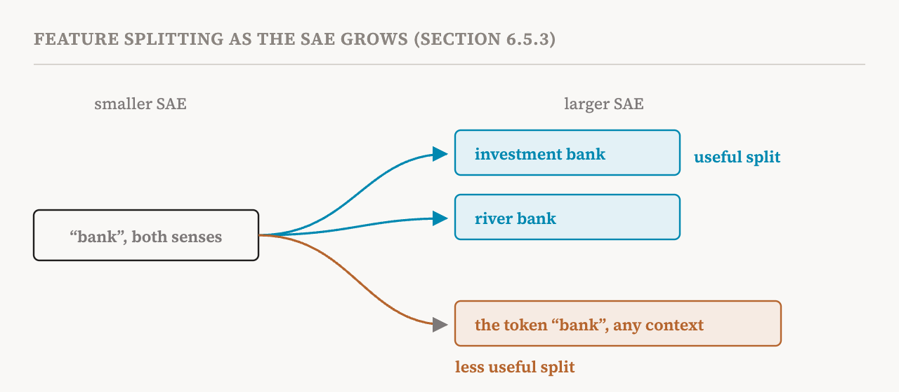

Parts 10 and 11 described how sparse autoencoders work and how to choose one. This part covers section 6.5 of the book (pages 37–41), which turns to how they go wrong. The book is direct about why this matters: SAEs show systematic failure modes that undermine the claims people make with them, so anyone using them as a tool for mechanistic analysis needs to know these failures. There are five, plus a set of practical rules.
Dead features
A dead feature is an entry in the dictionary that never activates, or does so extremely rarely, across training. It wastes the dictionary's capacity, and it is common: in a poorly tuned SAE, the book reports, dead features can make up 10 to 50% of the dictionary.
The book gives three causes. The SAE's weights may start in a part of activation space where there is little data, so the feature gets almost no signal to learn from. The sparsity penalty may be so strong early in training that some features are suppressed before they can become useful. And once some features have captured the common patterns, the rest may find nothing left to contribute and never activate.
Dead features are easy to detect: track how often each feature fires during training. A feature active on fewer than 0.01% of inputs might be counted as dead, though the threshold should depend on the setting. There are several remedies. Resampling periodically restarts dead features, pointing them at inputs the SAE currently reconstructs badly. The sparsity penalty can start weak and grow during training. And the Batch Top-k design of part 11 helps, because it lets complex inputs use more features.
Duplicated features
Feature duplication happens when several features in the dictionary encode the same or a very similar concept. The causes include too little pressure towards sparsity, unbalanced training data, and training that settles into a solution with redundant features. Duplicates can be found by comparing the directions of features, their decoder columns: two features pointing in almost the same direction are probably redundant. Because duplicates also tend to fire together, statistics of which features co-activate give a second check.
Absorption and splitting
The next two failures concern granularity: how broad or narrow the concepts captured by features turn out to be.
Feature absorption happens when concepts form a hierarchy, a general concept with more specific ones inside it. Under pressure to be sparse, the SAE finds it cheaper to fire one specific feature than both the general and the specific one. So the specific feature absorbs part of the general feature's direction into its own, and the general feature stays silent on inputs where it should fire.
The book's example comes from a 2025 study. An SAE may learn a feature for "starts with S" that fires on words beginning with S. But on the token "short", it fails to fire, because a feature specific to "short" fires instead, with a direction that partly overlaps. Anyone using the "starts with S" feature as a detector would miss "short" without knowing it.

Absorption creates false negatives, cases where a feature should have fired and did not, which makes the feature an unreliable detector of its concept. The book describes a way to catch it: train a linear probe for the same concept and compare. Inputs where the probe responds strongly but the feature does not, while some other active feature's direction lines up with the probe, are signs of absorption.
Feature splitting is the opposite movement. As the SAE gets larger, for example with a bigger expansion factor, a feature learned by the smaller SAE splits into several distinct features. That can help or not. In the good case, a feature that fired on "bank" in both senses splits into one for investment banks and one for river banks, each more coherent. In the less useful case, the new features become low-level detectors of the word "bank" in any context.

The two failures together make a sobering point. There is no single right size of feature built into an SAE. What it finds depends on its size and its sparsity pressure, and a concept can be split, merged or partly absorbed depending on those choices.
Instability across seeds
SAE features also depend on chance: on the random starting weights, the randomness of the optimiser and the order of the data. Train the same SAE design on the same data with a different random seed, and you can get a substantially different dictionary. Frequent features with clear meanings tend to be stable. Rare or context-specific features vary a great deal. The book reports that often fewer than half of the features stay the same from seed to seed, although broader clusters of meaning may be more consistent.
This limits how much weight any claim about an individual SAE feature can bear. If a feature might not exist in the next training run, it is hard to call it a fact about the model. Averaging over several seeds helps but costs more computing. The book's recommendation is to report feature stability across seeds alongside reconstruction loss whenever SAEs are evaluated.
Are these the real features?
The deepest concern is identifiability: whether dictionary learning reliably recovers the model's true underlying features, if such features exist, or merely finds one of many mediocre ways to decompose the activations.
The book makes the question precise. Suppose the activations really were produced by some sparse process, a true dictionary of features with true sparse coefficients, plus a little noise. An SAE is identifiable if its training recovers that true dictionary and those coefficients, up to changes that cannot matter, such as listing the features in a different order or rescaling them.
Classical dictionary learning has a known answer to when this works. Identifiability holds when the dictionary has low coherence, meaning its elements are close enough to orthogonal. When coherence is high, ambiguity appears: several different sparse combinations of dictionary features can produce the same activation, and nothing tells the method which one is right. In the activations of large language models, high coherence is probably unavoidable, given their complicated internal structure and the correlations among features. So identifiability remains a stubborn problem for SAEs, even though it explains several of the failures above.
There is a possible way forward. Recent work fine-tunes the language model itself around a fixed SAE, constraining the model's activations to be sparse combinations of the SAE's features while largely keeping its performance. One 2026 study goes further and trains the model jointly with the SAE while forcing the decoder's directions to be orthogonal. By imposing low coherence directly, it makes the decomposition unique, so the features can be reliably recovered. That is, it changes the model to fit the method, an idea part 15 returns to.
Monosemantic is not the same as causal
Identifiability connects to a second question. Even if an SAE feature looks monosemantic and helps reconstruct activations well, it may not be a causally meaningful unit of the model's computation. The book proposes three tests for any claim that a feature represents a concept.
| Test | Question | What a failure suggests |
|---|---|---|
| Necessity | Does removing the feature remove the concept from the model's responses? | The concept can also be expressed through other, redundant features |
| Sufficiency | Does activating only this feature produce the behaviour tied to its concept? | The feature alone is not enough to represent the concept |
| Specificity | Does the feature's causal effect match its concept, and nothing more? | The feature also carries other concepts |
Part 18 develops necessity and sufficiency into a general vocabulary for checking explanations.
The book's six recommendations
The section ends with practical advice for anyone doing SAE-based interpretability, summarised here.
| Recommendation | In practice |
|---|---|
| Report failure-mode metrics | Alongside reconstruction loss, report the share of dead features, the rate of duplication and the stability across seeds |
| Validate causal relevance | Test necessity, sufficiency and specificity with interventions such as ablation and steering |
| Compare methods | For safety-critical uses, check SAE features against other baselines |
| Try several variants | Gated, Top-k and JumpReLU have different built-in biases; findings that hold across them are stronger |
| Acknowledge identifiability limits | Present SAE features as one valid approximate decomposition, not the true features |
| Consider alternatives for targeted analysis | When the concept is known, supervised methods such as probes may be more reliable |
The fifth recommendation sums up the spirit of the whole section. An SAE gives a useful way to look at a model, and several equally good reconstructions may exist with different features. Treating any one of them as the model's own list of concepts claims more than the method can show.
| Term | Meaning |
|---|---|
| Dead feature | A dictionary entry that never or almost never activates |
| Resampling | Restarting dead features, aimed at inputs the SAE reconstructs badly |
| Feature duplication | Several features encoding the same or a very similar concept |
| Cosine similarity | A measure of how closely two directions point the same way |
| Feature absorption | A specific feature taking over part of a general feature's direction, so the general one misses cases |
| False negative | A case where a detector should have fired and did not |
| Feature splitting | One feature dividing into several as the SAE grows |
| Random seed | The number that fixes the random choices of a training run |
| Identifiability | Whether training reliably recovers the true underlying features, if they exist |
| Coherence | How far dictionary directions are from being orthogonal; high coherence causes ambiguity |
| Necessity, sufficiency, specificity | Three causal tests of whether a feature really represents its concept |
Next, part 13 moves beyond single layers, to transcoders, cross-layer transcoders and crosscoders, which follow features as they change through the model.